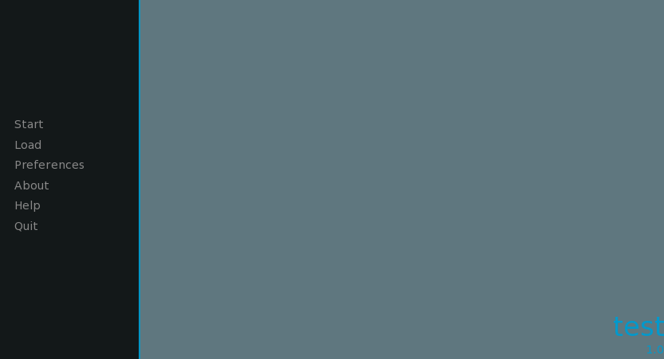
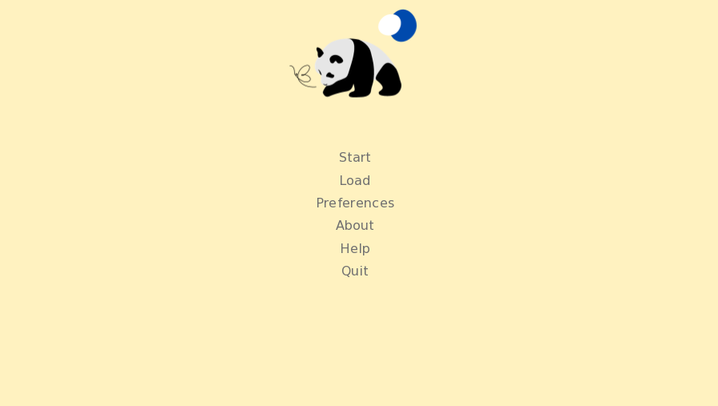
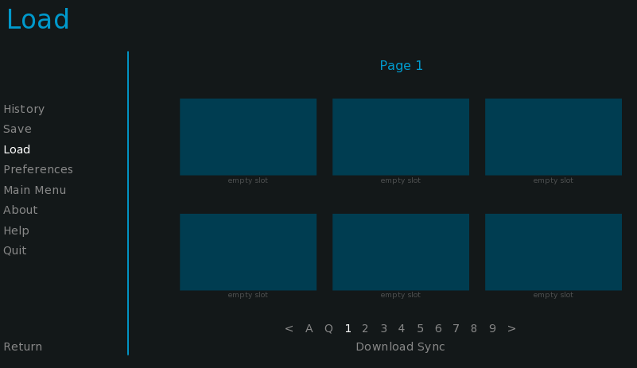
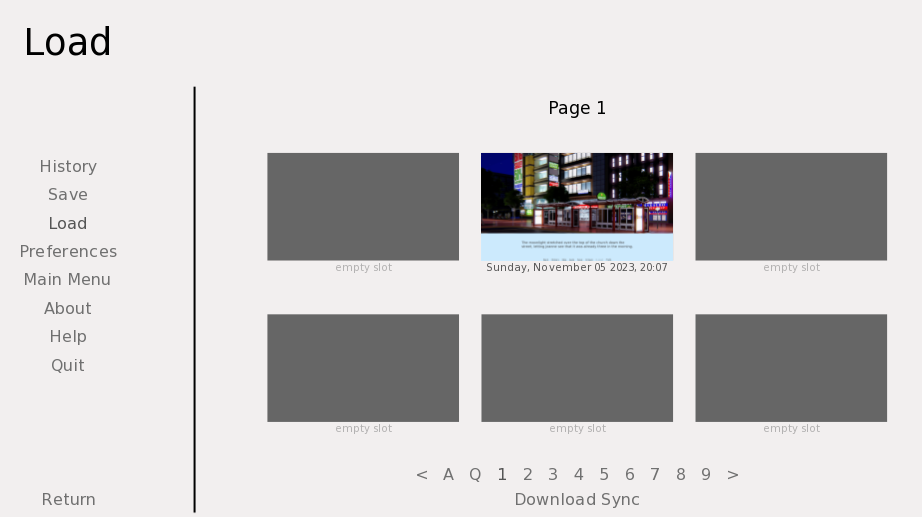
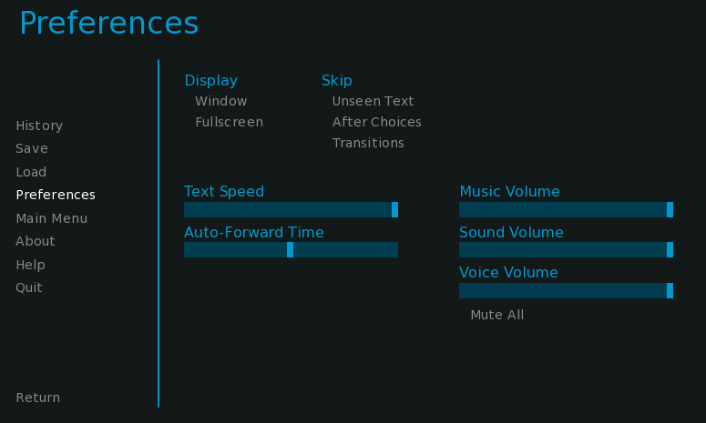
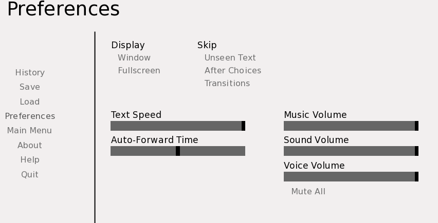
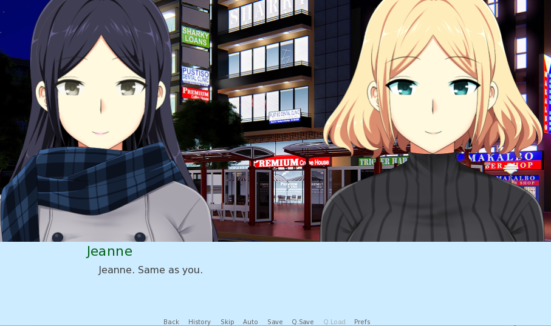
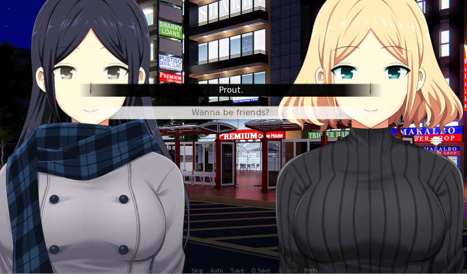

Merry Christmas, un petit jeu suivant une romance ordinaire
- POK
- 2023-2024
- temps 2
- Renpy
- Python
- TAING Henri
Ce POK a pour but de créer un visual novel - un roman avec des images dans lequel on peut faire des choix pour orienter l'histoire - à l'aide de Renpy. Il reprendra un roman que j'ai écrit, mais que je n'ai pas fini. Ce sera l'occasion pour moi de finir de l'écrire et de coder un petit jeu.
POK débutant+
Avoir fait un poil de Python, juste un petit peu, pour ne pas être perdu au début et donc ne pas perdre la motivation
Table des matières
Objectifs et backlog produit
Les objectifs
- Prendre en main l'outil Renpy (Pour la création du jeu)
- Se familiariser avec Figma (Pour faire l'arbre de décisions)
- Avoir une raison de finir d'écrire mon livre (Il sera simplifié pour le jeu, les 3/4 sont déjà écrits), il est en anglais donc ne soyez pas surpris que tout soit codé en anglais, etc.
- Créer un jeu qui couvrira la partie I et la partie II de mon roman.
Backlog produit qui évoluera
A : Lié à la fin A | B : Lié à la fin B | C : Lié à la fin C Le roman est divisé en plusieurs parties I.ABC., II.BC et III.B et III.C, mais on ne s'intéressera qu'à I.ABC, II.1.BC.
-
Faire un backlog précis et le mettre à jour [X] = 3 (2h)
-
Rafraîchir ses connaissances en Python et prendre en main Renpy [X] = 5 (1h30)
-
Gestion des ressources infographiques pour le jeu, personnages et fonds [X] = 2 (1h)
-
Arbre de décision Figma [] = 6 (3h)
- Parcourir le scénario et décider des points de ruptures [X] = 2 (20 minutes)
- Créer les arbres de décision pour I.AB [X] = 2 (1h40)
- Créer les arbres pour II.1.B [] = 2 (1h)
-
Programmation du jeu [] = 13
-
Coder les parties communes I. [X] = 7 (6h)
- Implémenter I. [X] = 5 (5h)
- Chapitre 1 [X]
- Chapitre 2 [X]
- Chapitre 3 [X]
- Chapitre 4 [X]
- Chapitre 5 [X]
- Mettre les fonds/personnages/transitions dans I. [X] = 2 (1h)
- Implémenter I. [X] = 5 (5h)
-
Route A [X] = 2 (1h)
- Fin A [X] = 1 (45 min)
- Mettre les fonds/transitions fin A [X] = 1 (15 min)
- Coder les parties communes II.1 [] = 4 (3h30) -
-
Customisation de GUI [] = 2 (1h)
- Menu principal [] = 1
- Barre de dialogue [] = 1
-
Documenter le POK [] = 1 (1h)
Ce que j'ai prévu au 1er sprint et ce qui a été fait finalement
Backlog Sprint 1 On prendra comme user-stories à faire :
-
Faire un backlog précis et le mettre à jour [X] = 3 (2h)
-
Rafraîchir ses connaissances en Python et prendre en main Renpy [X] = 5 (1h30)
-
Gestion des ressources infographiques pour le jeu, personnages et fonds [X] = 2 -> 3 (1h -> 2h)
-
Arbre de décision Figma [] = 4 (2h)
- Parcourir le scénario et décider des points de ruptures [X] = 2 (20 minutes)
- Créer les arbres de décision pour I.AB [X] = 2 (1h40)
-
Coder les parties communes I. [] = 5
- Implémenter I. [] = 5 (5h)
- Chapitre 1 [X]
- Chapitre 2 [X]
- Chapitre 3 []
- Chapitre 4 []
- Chapitre 5 []
- Implémenter I. [] = 5 (5h)
Ajouté durant le sprint car c'était trop moche
-
Customisation de GUI [X] = 2 (1h)
- Menu principal [X] = 1
- Barre de dialogue [X] = 1
Sprint 1 Review
J'ai sous-estimé le temps à prendre pour adapter mon texte à la fenêtre de dialogue et au code en général, sans compter les nombreux bugs que j'ai eus au début pendant la prise en main, et les problèmes d'images.
Mais, maintenant que la partie d'adaptation est passée, j'irai beaucoup plus vite. Pour autant, le backlog ne pourra pas être effectué en entier réalistiquement dans la limite des 20h. Il faudra aussi compter le temps de déploiement/mise en ligne du jeu que j'avais oublié initialement.
Une chose qui est sûre, maintenant, je comprends pourquoi les jeux sont généralement fait par des studios et non des personnes toutes seules. Scénariste, graphiste et développeur, ça commence à faire beaucoup.
Quelques images
Changement de l'interface (GUI) avec à gauche la version basique et à droite la version actuelle
|  |  |
|  |  |
|  |  |
Une image du jeu et le code associé 
define j = Character('Jeanne', color="#006416") #Définition du personnage
label start: #début du jeu
scene bg bus_stop_night #appelle l'arrière-plan
show jeanne cold smile at left #appelle l'image associée
show lise turtleblacksmile at right
j "Jeanne. Same as you." #dialogue
return #fin du jeu
Situation de choix et code associé 
menu: #crée le menu de choix
"Prout.":
jump suite1_1_1 #envoie vers suite1_1_1
"Wanna be friends?":
jump suite1_1_2
label suite1_1_1:
j "Wanna be friends?"
jump suite1_1_2
label suite1_1_2:
j "Like friends?"
Ce que j'ai prévu au 2ème sprint et ce qui a été fait finalement
Backlog Sprint 2 On prendra comme user-stories à faire :
- Le reste de l'arbre de décision Figma [] = 2 (1h)
- Créer les arbres pour II.1.B [] = 2 (1h)
-
Coder la deuxième moitié des parties communes I. [X] = 3 (3h -> 4h)
- Implémenter I. [X] = 5 (2h -> 3h)
- Chapitre 3 [X]
- Chapitre 4 [X]
- Chapitre 5 [X]
- Mettre les fonds/personnages/transitions dans I. [] = 2 (1h)
- Implémenter I. [X] = 5 (2h -> 3h)
-
Route A [X] = 2 (1h)
- Fin A [X] = 1 (45 min)
- Mettre les fonds/transitions fin A [X] = 1 (15 min)
- Début II. [] = 1 (1h)
~~ - Chapitre 1 [] = 1~~
-
Déploiement du jeu = 3 [X] (1h)
-
Test et débug = 2 [X] (1h)
Sprint 2 Review
J'ai oublié l'importance de tester et retester au fur et à mesure. Pour preuve, ça m'a beaucoup ralenti sur la deuxième moitié de la partie 1, car j'ai dû tout reprendre petit à petit. Le déploiement s'est effectué beaucoup plus facilement que prévu grâce au build fourni par Renpy.
Conclusion
Je conseille Renpy pour faire un visual novel. C'est simple. Barbant. Efficace. Un vrai outil de débutant. J'aurais néanmoins voulu avoir plus (beaucoup plus) de temps pour vraiment finir de coder tout mon roman et ne pas simplement livrer la première partie, et également pour nettoyer et organiser mieux le code.
Enfin, tant mieux que ce soit fini, j'allais devenir fou.
Voici le lien pour essayer mon jeu ! Le jeu !
Sources
Tutoriel pour créer un jeu avec Renpy (en anglais) de ZeilLearnings Documentation pour débuter sur Renpy Customiser l'interface graphique (GUI) Ressources pour les arrières-plans Autre ressources pour les arrières-plans Ressources pour les personnages Déploiement du jeu sur itch.io Le jeu !